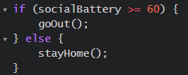
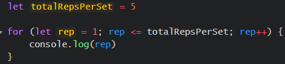
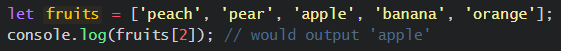
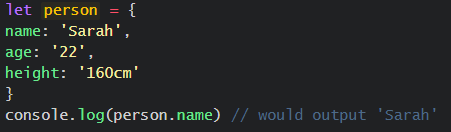
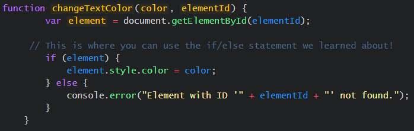

So, you want to build a website but are confused about how Javascript
interacts with HTML and CSS? Let's start with a simple analogy!
Instead of a website, let's imagine that we are organising the
construction of an actual building. We are the construction manager for
this project; we look over all of the different components and ensure
that they are interacting smoothly. We also tell everyone what to do
(fun!).
In this case, HTML would be the actual building of the project. HTML
lays down the foundations and the simple lines for how the building is
going to be laid out; the walls, the roof, the floors, hallways, and
rooms. Without HTML, there would be no building at all.
CSS is the interior design aspect of the build. It takes the bare bones
of the foundations and makes it more attractive. CSS adds paint, color,
decoration, and just generally makes the building more interesting to
look at.
Javascript is the hard part that is usually handled by the specialists
on site. The electricity, plumbing, security features, or general
automation tasks are handled by Javascript. This makes the build more
interactive and functional in design, basically taking it from a pretty
base building and making it responsive to living.
Let's say that our everyday lives are dictated by Javascript, as if we
were living in a video game. Control flow, if statements, and loops are
the way in which our everyday decisions and tasks are organised. They
help you take control of your life!
If/Else statements.

So, you've decided to attend a social gathering with your friends. As
shown above, if your social battery is above 70% then you decide to go
to the event. Else, you decide to stay home.
Loops.
Javascript supports different types of loops, but for this example we
will be focusing on 'for' loops.

Let's say that you've gone to the gym. The above example would be a
'for' loop for a single set of an exercise. You set the total number of
reps per set as 5 then run the loop.
The DOM stands for Document Object Model. Essentially, it represents the
structure of a document as a tree that branches off and ends in a node,
with each node containing objects. Hence, the name.
You can manipulate these objects through languages, like Javascript,
where you can change the content of the page, the structuring, and the
styling.
The DOM is useful as it provides structure to how documents are
represented. Elements are organised in a tree-like heirarchy with each
node relating to an element, text, or attribute within the document. It
also isn't limited to Javascript, the DOM is accessible through various
programming languages, allowing its users to manipulate or access any
elements or text within the HTML document.
The DOM is also useful for trouble-shooting. As shown above, I can use
the DOM to find issues or a specific line of code by simply accessing
the Inspect Element tool. In the example, I have noticed that the color
of my header blends into my background image, especially on mobile. I
have used the Inspect Element tool to hover over the header and it
immediately pulls up that line of code. We can also view our websites in
different formats such as mobile, desktop, or even iPad.
In Javascript, arrays and objects can both be used to store data.
However, the way that they store this data is different. Arrays store
data numerically in 'memory locations' (remember [0], [1], [2], [3],
etc) and objects store data in 'key-value' pairs. In an array, numbers
are declared with square brackets. Objects, however, use curly brackets.
Arrays and objects store data differently, so it would make sense that
we also access this information differently. Elements in an array are
accessed by their numerical index. Remember, we start at [0] rather than
[1].

In comparison, objects access elements by their named keys.

When you have a list of similar items or numbered data, it may be best
practice to use an array. For example, an array of names or types of
fruit. If you are working with named properties, then it may be best
practice to use an object. For example, a person with 'attributes' like
their name, age, height, etc. Or, a fruit with attributes such as price,
ripeness, source, etc.
In Javascript, functions are little blocks of code that have designated
roles or jobs. Initially, you start with the function which you can
define.

For example, let's make a function called 'changeTextColor'. This
function takes two parameters: color and the elementID. First, it needs
to find the matching HTML element with the corresponding elementID. If
the element exists it will change its text color. If the element doesn't
exist, it will log an error to the console.
Functions are useful because they allow you to reuse the same code
multiple times, instead of having to write out the same code over and
over again. You can define a function once and then call it up whenever
you need it (similar to classes in HTML or CSS). This helps keep your
code neat, organised, and easier to navigate.